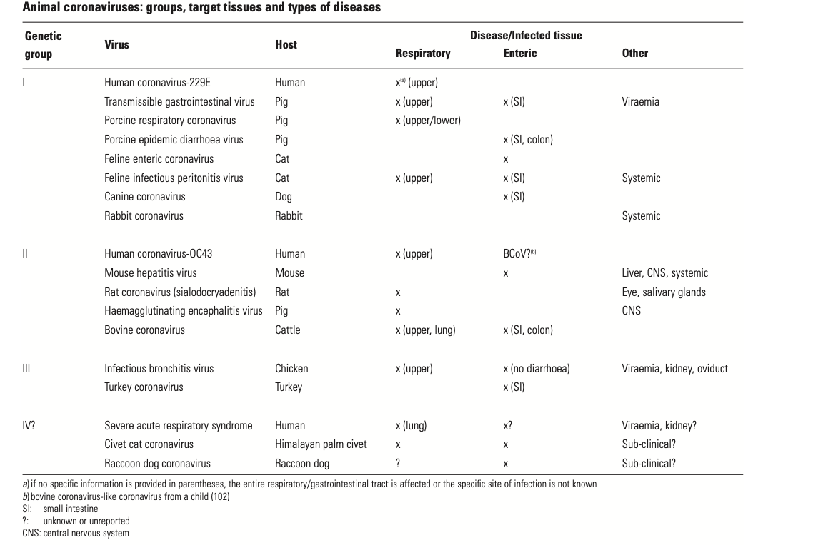

Till March 18th I { Arun Koundinya } was never worried about Corona Virus. The prime reason being is that; I was not aware of the impact that it could create and as well I was surrounded by false facts.
Video Interview by Karan Tappar with Laxmi Narayan has made me humble to rethink the whole situation.
If you hadn’t listen this master piece yet; I request you to listen to entire conversation patiently for 50 minutes.
So, we Arun Koundinya & Mahesh Kolli { Who is a Doctor & this blog co-author } thought to create awareness and present you the right facts for the larger audience. Please share and create awareness. There are more people like me { Arun } who have less information about the pandemic.
1) What is the difference between a virus and a bacteria ?
Viruses are very small infectious agents that can only replicate inside other living cells. Bacteria are slightly larger than viruses and are made up of a single cell. They are very simple organisms, and most can replicate outside other cells. They are virtually everywhere virus only works by invading a cell within an organism and taking over that cell’s machinery to reproduce itself. By itself, it doesn’t contain all ability to do everything it needs to survive and replicate. It essentially has to parasitise that other cell. so it means that bacteria multiply outside your body but doesn’t need your help to multiply but viruses need you as a host multiply
To look at it; it needs us to survive itself. It is its survival instinct.
2) What is the origin of common zoonotic viruses to humans and where does the virus live in the human body and how many days
Zoonotic infections are not new. They have always featured among the wide range of human diseases and most, e.g. anthrax, tuberculosis, plague, yellow fever and influenza, have come from domestic animals, poultry and livestock.
However, with changes in the environment, human behaviour and habitat, increasingly these infections are emerging from wildlife species.
According to the global example, type 1 human immunodeficiency virus (HIV-1) originated in chimpanzees and Ebola virus in bats. 6 Estimations show that there are more than 1.6 million mammalian and waterfowl viruses, spanning 25 viral families known to cause human infections.
The whole world is in the grip of the coronavirus now. The pandemic started in December 2019 in Wuhan, China and has spread insidiously world over. Coronaviruses have been identified over 60 years ago as one of the agents which cause the annoying common cold. There are 4 types of the beta-coronavirus family which can cause the disease. But, like the influenza virus, it has the uncanny ability to mutate often. The first such instance of a dangerous mutation was in 2002, the SARS (Severe Acute Respiratory Syndrome) outbreak from Hong Kong, which afflicted over 8,000 people and resulted in around 800 dead (a mortality of 10%). It is believed to have originated in bats, which are, incidentally, asymptomatic and transmitted via civet cats to humans. The second catastrophe was the mutation resulting in MERS (Middle Eastern Respiratory Syndrome), which originated again from bats, and affected humans through an intermediate host, the dromedary camels, in Saudi Arabia. By last counts, there have been around 2,500 cases with over 750 deaths (a mortality of 35%). The current outbreak is again due to a mutated coronavirus labelled by WHO as SARS-CoV-2, which is believed to have originated from bats in a live animal and sea-food market in Wuhan, and infected man through an intermediary host (? pangolin). The virus has the ability to infect lung cells through a receptor known as ACE-2, leading to complications of pneumonia and respiratory failure. COVID-19, the disease caused by SARS-CoV-2, has affected over 150 countries, 3,00,000 people with over 13,000 deaths. In India, 476 infections have been identified with nine deaths.

The PREDICT project has already discovered over 1000 viruses, including novel Severe Acute Respiratory Syndrome (SARS)-like coronaviruses that can infect human Cells PREDICT project of the United States Agency for International Development’s Emerging Pandemic Threats programme.
The virus spreads through respiratory droplets from an infected person. It could directly spread through inhalation of droplets when you are within a metre of a coughing patient, but more often, it is by touching inanimate objects contaminated by these droplets and taking our hands near our nose and mouth. This essentially means that if we are at least a metre away from anyone, and wash our hands frequently, it is highly unlikely that we would be infected. This is the rationale behind the concept of social / physical distancing. Even though the virus can survive for substantial periods on inanimate objects (a day on cardboard and 2-3 days on plastic and steel, under ideal conditions), it dies on drying.
To look at it; there is much needed capability to include Veterinary Scientists going forward to predict such mutated genome viruses.
3) What is the necessity of Quarantine.
Quarantine is used to separate and restrict the movement of well persons who may have been exposed to a communicable disease to see if they become ill. These people may have been exposed to a disease and do not know it, or they may have the disease but do not show symptoms. Quarantine can also help limit the spread of communicable disease.
Separation If you are potentially infectious, it is important that you separate yourself from your partner, your housemates, your children, your elderly aunt. To be on the safe side, you shouldn’t even pet your dog, according to the C.D.C., although pets are not known to transmit the coronavirus. A room must be designated for your exclusive use. A bathroom should be, too, if possible. Every surface you cough on or touch could become contaminated with the virus. Masks If you must be around other people — in your home, or in a car, because you’re on your way to see a doctor (only after you have called) — you should wear a mask, and everyone else should, too.
But first, you or one of your friends or family members have to find masks, which are sold out almost everywhere. If you can’t, you can create a makeshift one from a scarf or other garment.
Hygiene If you cough or sneeze, you should cover your mouth and nose with a tissue, and discard the used tissue in a lined trash can. Then you must immediately wash your hands with soap and water for at least 20 second Or more
4) Chinese Epidemic the origin in Wuhan and how the lockdown worked
According to the Chinese government data, a 55 year-old from Hubei province could have been the first person to have contracted Covid-19 on November 17. Hubei was the epi-center not wuhan as lot us may think . From that date onwards, one to five new cases were reported each day. By December 15, the total number of infections stood at 27 – the first double-digit daily rise was reported on December 17 – and by December 20, the total number of confirmed cases had reached 60. By the final day of 2019, the number of confirmed cases had risen to 266, On the first day of 2020 it stood at 381.
While the government records have not been released to the public, they provide valuable clues about how the disease spread in its early days and the speed of its transmission, as well as how many confirmed cases Beijing has recorded. On December 27, Zhang Jixian, a ophthalmologist doctor from Hubei Provincial Hospital of Integrated Chinese and Western Medicine, told China’s health authorities that the disease was caused by a new coronavirus. By that date, more than 180 people had been infected, though doctors might not have been aware of all of them at the time .
He warned his doctor colleagues to use protective equipment and gear in private groups for which he did not go down well with the communist government who try to underplay the epidemic. Wuhan police summoned and admonished him for “making false comments on the Internet. Li returned to work, later contracted the virus from an infected patient and died from the disease on 7 February 2020, at age 33. A subsequent Chinese official inquiry exonerated him and the Communist Party formally offered a”solemn apology” to his family and revoked its admonishment of him and two other police officers.
Lockdown
When the lockdown started on Jan. 23, residents were barred from leaving the city, and public transportation was canceled. In the following weeks, the lockdown tightened; authorities told residents that they couldn’t leave their homes without permission — and even kept track of who was buying cold medicine at the pharmacy.
Those in quarantine were told to check themselves for fever twice a day — which more than half the respondents admitted they did not do. “Taking my temperature made my heart feel like it was going to pound out of my chest each time,” one respondent noted.
They varied in degrees of strictness—from checkpoints at building entrances and hard limits on going outside. At some apartment complexes, security guards kept people from entering and exiting. In Wuhan, armies of enforcers were deployed to ensure citizens complied with the lockdown, and volunteers went door-to-door checking residents’ temperatures. Those found to have fevers were sent to quarantine centers.
Delivery drivers wearing hazmat suits, masks and goggles deliver a neighbourhood’s food orders to an agreed location (such as the porter’s lodge or a local landmark like a fountain) at a certain time of day, Will says. They then phone families to let them know the food has arrived. A family member wearing a single-use face mask and gloves and a special jacket will then come out to collect the family’s supplies. They spray their bags of shopping with a sanitiser, then carry the supplies back to their flat.
Essential workers are tested for signs of coronavirus before they enter any building, and often randomly as they drive. “Testing is everywhere,” Will said.
Certain ‘essential workers’ (such as doctors, nurses and other medical staff) are classified as at ‘high risk’ of contracting coronavirus. These are put up in special hotels to minimise the risk of the disease spreading. In cases where they do have to go home, they are advised to sleep in separate bedrooms to protect their family.
Every local neighbourhood has its own dedicated pharmacy. Accredited volunteers deliver medication to the door of families that need it. Specially trained volunteers also support families where a member has fallen ill with a condition that is not coronavirus. For several weeks now, no-one has been allowed either out of or into Wuhan, by car, bus, rail, air or boat.
Essential workers, such as doctors, nurses and other medical staff, police, local government workers, delivery drivers, certain factory staff, and workers who helped build the city’s new temporary hospitals, are granted special licences to be able to drive, so that they can get to and from work. These licences have to be applied for in advance by their employers. No-one else can drive.
The Wuhan travel ban alone had reduced 202,000 cases in China, delaying epidemic growth and buying valuable time for other areas to mobilise and response, as per a research study done by 22 scientists.
5) What is the index case and how Wuhan Marked had Community transmission
The index case (sometimes colloquially referred to as patient zero) is the first documented patient in a disease epidemic within a population or the first documented patient included in an epidemiological study.
Other Stories;
Consider the story of Gaëtan Dugas, a gay flight attendant for Air Canada in the early 1970s. He was cast in many reports as Patient Zero of the HIV/AIDS epidemic and became a medical scapegoat in North America in the 1980s. Human error and alarmist reporting fuelled the false narrative until Dugas was exonerated in 2016 — 32 years after his death
Mary Mallon, better known as Typhoid Mary, is the most often-cited case. Born in Ireland in 1869, Mallon emigrated to the U.S. in 1884 where she began working for a variety of wealthy families as a domestic before she became a cook. She was also a healthy carrier of Salmonella typhi — typhoid fever — meaning that she was infected with the pathogen but never showed any signs or symptoms herself. When a medical researcher discovered her condition, Mallon was placed in a three-year quarantine.
Corona Virus;
So whereas the index case or patient zero couldn’t be identified as the index case might have been around in china before November. According to news reports the first patient to report to a clinic was on December 10th { Wei Guixian, a seafood merchant in this city’s Hua’nan market, first started to feel sick}. Thinking she was getting a cold, she walked to a small local clinic to get some treatment and then went back to work. Eight days later, the 57-year-old was barely conscious in a hospital bed, one of the first suspected cases in a coronavirus epidemic that has paralysed China and gripped the global economy.
The virus has spread around the world and sickened more than 100,000. For almost three weeks, doctors struggled to connect the dots between Ms. Wei and other early cases, many of them Hua’nan vendors. Patient after patient reported similar symptoms, but many, like her, visited small, poorly resourced clinics and hospitals. Some patients balked at paying for chest scans; others, including Ms. Wei, refused to be transferred to bigger facilities that were better-equipped to identify infectious diseases. When doctors did finally establish the Hua’nan link in late December, they quarantined Ms. Wei and others like her and raised the alarm to their superiors.
6) Which Age group of population is affected?
To be clear, nobody should feel invulnerable to the coronavirus. Young people are going to contract the disease, a not-insignificant percentage of them are going to get very sick, and a smaller number {negligible people} will die. The rates of severe and deadly cases might not be nearly as high as the older generations that we are worried about, but the data already show that age alone does not make you invincible. One, there is some indication that men could be at a higher risk of severe symptoms and death than women.
In the initial Wuhan, China, outbreak, for example, men were dying at a notably higher rate than women. We’ve seen the same trend in Italy. But we will need more research and data to be sure about the effect of gender on a patient’s prognosis.
Second, we know that people who have underlying medical conditions face higher odds of getting really sick or dying from Covid-19, particularly those with heart disease, diabetes, high blood pressure, lung disease, and cancer.
Having one or more of those conditions increases a person’s risk of severe symptoms.
7) Index cases in India
The first three cases in India were reported between 30 January and 3 February in Kerala. All three patients had returned from Wuhan, China — the epicentre of what has now been declared a pandemic.
The country’s next two cases were reported nearly a month later, on 3 March — one patient in Delhi who had a travel history to Italy, and the second in Hyderabad, who had travelled from Dubai.
8) Does not following the correct dosage of medicines than normal cycle will re-grow the virus?
Most of you might be aware of Anti-Biotic resistance which is primarily related to bacteria related diseases.
However, the anti-viral drug resistance is more dangerous because of virus survival instinct it might learn to adapt to the drugs. So, in all scenarios let us not be a doctor of our own and never prescribe thyself which might be harmful for future generations.6
In all good scenarios, it is always better to develop our own immune system healthily with natural and good wholesome balanced nutritional food. Hygiene also is of paramount importance. Resisting temptation to eat from unhygienic and learning to not self medicate from the pharmacy shop.
Instead of self medicating i encourage everyone to get a complete health check every 6 months or on bad scenario for every 12 months at good labs and visit a good family specialist in your area .
9) Why we are not immune to such new Novel Viruses?
Long lasting immunity is obtained by means of the adaptive immune system, and mainly involves the development of antibodies that identify specific parts (epitopes) of the pathogen’s proteins. Common cold is typically caused by a type of virus called rhinovirus. Viruses have very high mutation rates, which alter the sequence of the virus proteins, modifying their antigenic properties. This consequently alters the ability of antibodies to recognise a particular antigen.
In other words, we do develop long lasting immunity against the virus that causes us a cold today, but the virus that causes us a cold a few months later is somewhat different, and the adaptive immune system has to start from scratch.
If it is a complete new virus the antibodies have no clue to recognise the antigen that’s the reason why all the conspiracies gets developed as well.
To Conclude,
Few of you might have come across this research paper Link; Which reminded me of a proverb ‘A Stitch in Time Saves NINE’; If you have no time reading that paper here are last few lines { The presence of a large reservoir of SARS-CoV-like viruses in horseshoe bats, together with the culture of eating exotic mammals in southern China, is a time bomb. The possibility of the reemergence of SARS and other novel viruses from animals or laboratories and therefore the need for preparedness should not be ignored. }. While writing this blog we have as well learnt that the Chinese government has banned the wild life trade as well. Which is a welcome move.
With respect to the current situation we have to now respect each other and follow the orders of the government and maintain a strict quarantine for at-least 21 days which might be revised to higher number going forward.
I convey my heartfelt thanks to Donald Trump who has posted the drug medicine to the entire world which fastens the speed to save millions. And Indian Government acting on it very quickly and issuing the same to our doctors. Also, while writing this blog we have learnt that FDA has approved “Convalescent plasma transfusions”. In simple words the blood from recovered patient will be used for treating the ill/critical patient.
Never miss the complete the dosage and never take your medicines on your own which are especially Scheduled H or Scheduled Drugs. Always follow Registered Doctor Advice.
Finally, we have to be responsible by being under strict quarantine and following orders of government and respective authorities.